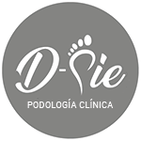
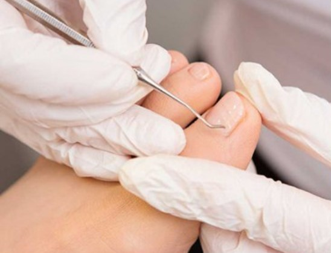

Reservar horaUna clínica enfocada 100 % en la salud de tus pies, con podólogas tituladas, atención de urgencias y servicio a domicilio.
Reservar por WhatsAppVer valores
Para urgencias y atención a domicilio, consulta los valores por teléfono.
Evaluación del pie, corte y pulido de uñas, tratamiento de durezas, ojos de gallo y hongos.
desde $20.000Limpieza, retiro de la espícula y curación avanzada.
desde $40.000 por dedoControl de la evolución de tu tratamiento.
$10.000 por dedoTratamiento con revisión e indicaciones.
$50.000Restaura la apariencia y funcionalidad de una uña dañada.
$20.000 por uñaLiberación de presión y curación.
desde $15.000Para encauzar el crecimiento de las uñas y evitar que se encarnen de nuevo.
$20.000 por uñaPodólogas clínicas tituladas de la Escuela de Profesiones Clínicas, inscritas en el registro nacional de podólogos. Creen que el trato humano es parte de la experiencia clínica.
Escríbenos o llámanos y coordinamos tu hora.
Paseo Ahumada 6, oficina 52
Santiago Centro